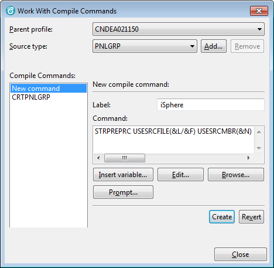
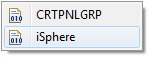
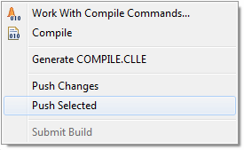
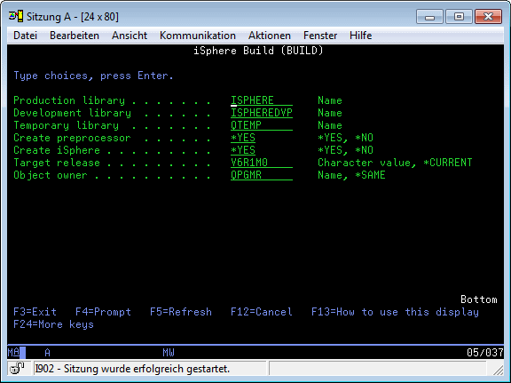

The iSphere version numbers must match the following pattern:
| major.minor.micro.qualifier |
The qualifier must be set to r for a release version or bnnn for a beta version, where n is any positive number between 0 and 9.
Examples:
| 2.6.0.r | - | Release version number. |
| 2.6.0.b004 | - | Version number of the fourth beta version. |
The Eclipse version comparator treats the major, minor and micro part as integer values. But the qualifier is compared using a string comparator. Therefore we chose the r for the release and the b for the beta version to make sure that the release version number is higher than the beta version number.
The iSphere build process is controlled by Ant build files. The main build file is "build.xml" of the "iSphere Build" project. This files performs the following main steps:
The most current build instructions can be found at the top of the build script.
The second build file is "build.xml" of the "iSphere Help Builder" project. It is used to create the iSphere Internet help pages from the iSphere help projects. This way we can use the same help pages for the Eclipse help as well as for the Internet help.
This build script is run from the main build script. But it can also be run stand-alone to execute the following main build steps:
The build process is controlled by two configurations files. Both files are located in the "iSphere Build" project.
build.properties
This properties file configures what is build and what projects are used to build the iSphere plug-in. The properties file contains a detailed description of each property. The most important properties are: for your environment:
| build.version | - | Specifies the version number of the iSphere plug-in. |
| build.dryrun | - | Specifies whether the FTP upload to SourceForge is simulated or not. |
| build.target | - | Specifies the target the plug-in is built for. |
| build.files.enabled | - | Specifies whether the plug-in is built. |
| build.web.enabled | - | Specifies whether the HTML update site page is built. |
| build.help.enabled | - | Specifies whether the HTML help pages are built. |
| build.home.enabled | - | Specifies whether the iSphere home page is built. |
ftp.properties
This properties file describes the properties that are required to download the iSphere library from the host and the properties used for uploading files to SourceForge. Each property is described in the properties file. Copy template_ftp.properties to ftp.properties and set the following properties for your environment:
| IBMi.ftp.server | - | DNS name of TCP/IP address of your IBM i server. |
| IBMi.ftp.user | - | Name of your user profile on your IBM i server. |
| sf.ftp.user | - | Your user name at SourceForge. |
| Please also notice the "build.dryrun" property of the "build.properties" file. When set to true nothing is deleted or uploaded. It is just simulated. |
This example describes how to use the ANT build script in order to build the iSphere plug-in. Please also notice the prerequisites that must being met before building the plug-in:
| Step 1: | Navigate to project iSphere Build and open the build folder. |
| Step 2: | Set the following properties as shown below:
build.files.enabled=true build.web.enabled=true build.help.enabled=false build.home.enabled=falseProperty build.help.enabled could also be set to true if you want to update the help pages, too. Property build.home.enabled could also be set to true if you want to update the iSphere home page, too. |
| Step 3: | Open build.xml. |
| Step 4: | Select Run As, Ant Build from the context menu of target downloadISphereLibrary. |
| Step 5: | Select Run As, Ant Build from the context menu of target build.
That will open the Ant Configuration Selection window. Select the RDi or WDSCi configuration depending
on your IDE (Integrated Development Environment). That will clean temporary folders and initialize the build process.
iSphere Build build.xml (RDi) iSphere Build build.xml (WDSC) |
| Step 6: | Navigate to project iSphere Update Site and execute PDE Tools, Build Site from the context menu of site.xml. |
| Step 7: | Return to build.xml. |
| Step 8: | Execute target createSourceForgeFiles to create the plug-in. |
| Step 9: | Execute target uploadSourceForgeFiles to upload the plug-in to SourceForge. You will be asked for your SourceForge password. The password is shown in clear text! |
This example describes how to use the ANT build script in order to build the iSphere help pages on the Internet.
| Step 1: | Navigate to project iSphere Build and open the build folder. |
| Step 2: | Set the following properties as shown below:
build.files.enabled=false build.web.enabled=false build.help.enabled=true build.home.enabled=false |
| Step 3: | Open build.xml. |
| Step 4: | Select Run As, Ant Build from the context menu of target build.
That will open the Ant Configuration Selection window. Select the RDi or WDSCi configuration depending
on your IDE (Integrated Development Environment). That will clean temporary folders and initialize the build process.
iSphere Build build.xml (RDi) iSphere Build build.xml (WDSC) |
| Step 5: | Execute target createSourceForgeFiles to create the help pages. |
| Step 6: | Execute target uploadSourceForgeFiles to upload the help files to SourceForge. You will be asked for your SourceForge password. The password is shown in clear text! |
The master help stylesheet file is located in folder:
[workspace]\iSphere Build\build\templates\stylesheet.css
It is copied to the help projects by ANT target updateStylesheets.
iSphere objects are compiled from the i Project. But instead of the predefined IBM compile commands, we use the STRPREPRC utility to compile iSphere objects. This way we can store object specific compile options in the source member instead of changing the compile command each time the object is created.
The STRPREPRC command can be created by the iSphere BUILD command, which is described below in section Library Build.
So whenever you want to compile a new object type, you first need to add the STRPREPRC compile command to that object type. For that, open the context menu of the source member that you are going to compile. Select Remote Actions and Work With Compile Commands.... Click New command underneath Compile Commands and add a label, e.g. iSphere and the STRPREPRC command:
Do not add line breaks to the command string! I does not work.

Click the Create button to add the new compile option.
Now use compile option iSphere each time you compile the object.

Do the same each time you compile an object type for the first time. The STRPREPRC command is the same for all object types.
The iSphere library is built from an IBM i command line with the iSphere BUILD command. If you did not yet check out the iSphere project from the repository, refer to Installing the SVN Adapter to learn how to install the SVN adapter. Then open Connecting to SourceForge to connect to SourceForge and eventually checkout the project, as described in The iSphere Host Project.
Switch to the i Projects perspective and select Remote Actions -> Push Selected from the context menu of the iSphere project to push the source code to your host:

Now login to your host and compile the iSphere BUILD command like this:
Add library ISPHEREDVP to your library list:
And eventually execute the BUILD command:

This way you create library ISPHERE from library ISPHEREDVP. But you can also use the command to compile your iSphere library "in place" when you specify the same library name twice.